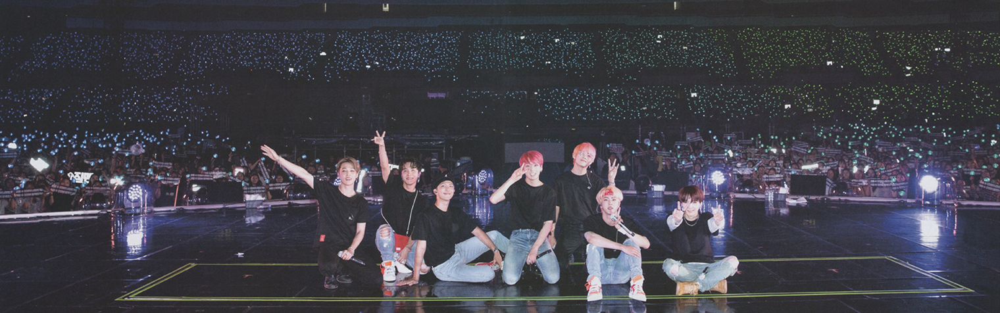

Quem são é BTS?
Descrubra quem são os integrantes que formam o BTS e saiba mais sobre a historia tragetoria e
conquistas do grupo. Formado por 7 integrantes: RM, Jin, Suga, J-hope, Jimin, V e Jungkook você aqui
descobrirá que o nome BTS não é limitado apenas a conquistas musicais, mas também irá saber mais
sobre o envolvimento deles com outras causas, como exemplo, 'Love Yourself' em parceiria com a
UNICEF. Leia mais clicando aqui.
O que é o WEARMY?
O WEARMY é um projeto que procura reunir fãs do BTS de diferentes nacionalidades em um lugar só
com um ofrum interativo permitindo os usuarios criarem post e comentarem nas publicações uns dos
outros. Nesse forum, os usuarios tem a liberdade de expressarem sua paixão pelo BTS, trocar
informações, participar de discussões e se conectar com outros fãs ao redor do mundo. Leia mais
sobre funcionalidades do projeto clicando aqui.
Acesse a discografia
Nessa aba você irá conhecer todos os projetos musicais que o BTS fez e se envolveu. Desde o seu
primeiro album 2 Kool 4 Skool lançado em 2013 até mesmos projetos individuais como OST de doramas. O
grupo possui uma notoria diversidade de temas e estilos que estão presente em toda sua tragetoria
musical. Descubra mais sobre clicando aqui.
Simule sua coleção
Nosso site possui um catalogo com todos os album do BTS com preços atualizados conforme a loja
WEVERSE que permite que você selecione todos os items que falta para você terminar a sua coleção.
Lembrando que o preço está em dollar, mas a cotação do dollar está sendo constantemente atualizada.
Acesse o simulador clicando aqui.